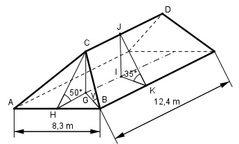

Aufgabe 102 Ein Walmdach ist 12,4 m lang und 8,3 m breit. Die Neigung der trapezförmigen Dachflächen beträgt 35°, die der dreieckigen 50°. Wie groß ist der Neigungswinkel γ der Grate?

Im Dreieck IKJ, rechter Winkel bei I: KI =8,3/2 m = 4,15 m IJ tan 35° = ---- | *KI KI IJ = KI * tan 35° = 4,15 m * 0,7002 = 2,9 m Im Dreieck HGC, rechter Winkel bei G : GC = IJ = 2,9 m GC sin 50° = ---- | *HC HC HC * sin 50° = GC |:sin 50° GC 2,9 m HC = --------- = --------- = 3,8 m sin 50° 0,766 Im Dreieck HBC, rechter Winkel bei H: Satz von Pythagoras: HB = 8,3/2 m = 4,15 m CB2 = HB2 + HC2 = 4,152 m2 + 3,82 m2 = = 17,2 m2 + 14,4 m2 = 31,6 m2 CB = √31,6 m2 = 5,6 m Im Dreieck GBC, rechter Winkel bei G: GC 2,9 m sin γ = ---- = ------- = 0,5179 --> γ = 31,2° CB 5,6 m